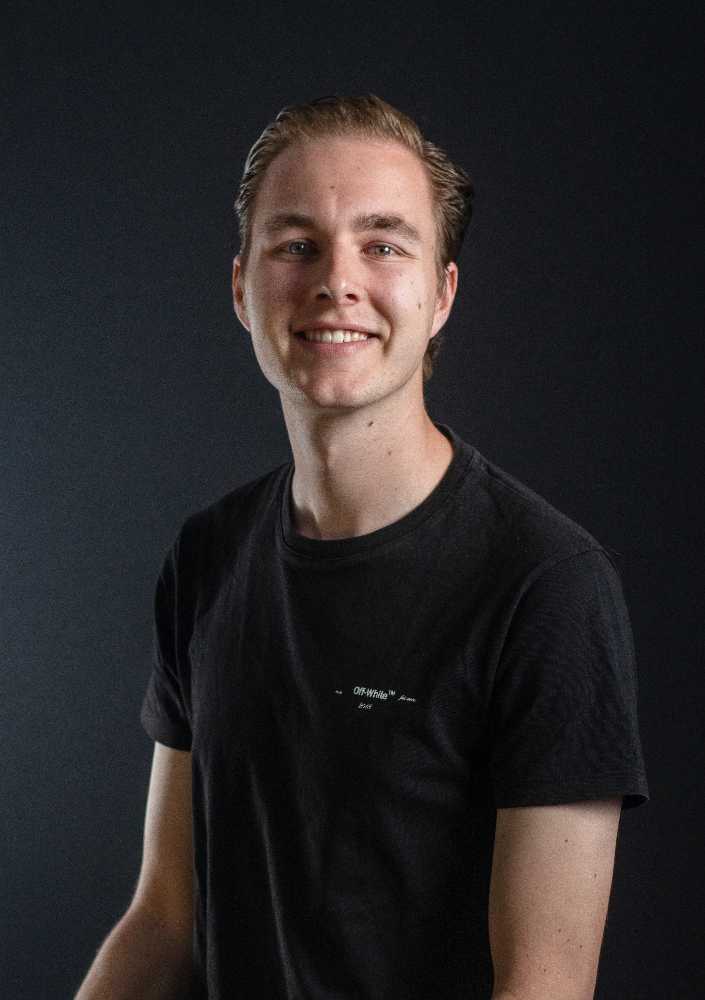
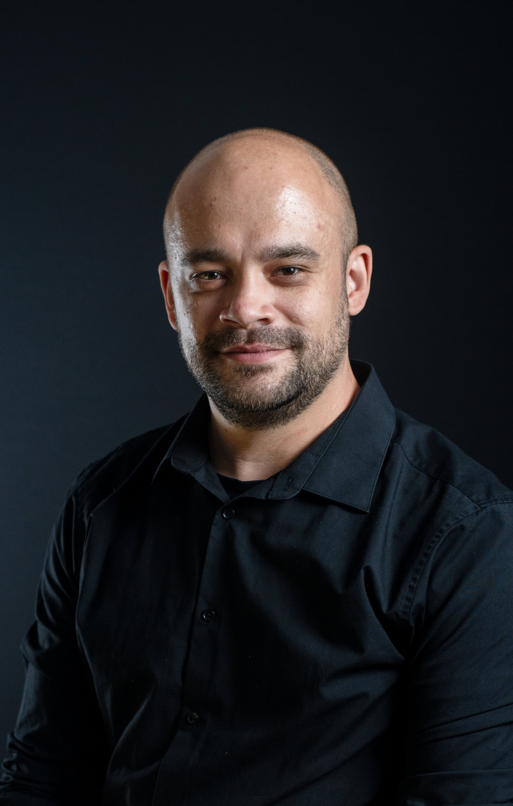

Kunstlab · Een muzikaal onderzoek
Hoe breng ik mijn eigen geluksgevoel terug in een arrangement volgens mijn eigen visie op muziek?

Mijn naam is Jop Copal en muziek is voor mij veel meer dan noten op een blad. Het is de plek waar ik mezelf kan uiten. Achter de piano voel ik me thuis: daar komen mijn gedachten, mijn herinneringen en mijn geluksgevoel samen in één klank.
In dit kunstlab ben ik op zoek gegaan naar de kern van dat gevoel. Wat maakt een melodie nou écht van mij? Hoe vertaal ik een moment van geluk naar een arrangement dat klinkt zoals ik het voel, niet zoals het “hoort”? Ik onderzoek mijn eigen muzikale handtekening en maak daarin persoonlijke keuzes.
Dit project, Joy of Life, is mijn poging om dat onzichtbare gevoel hoorbaar te maken. Een arrangement dat niet perfect hoeft te zijn, maar wel bij mij past.
— Jop
Voor dit kunstlab hield ik een dummy bij: een schrift vol foto's, herinneringen en gedachten over wat mij gelukkig maakt. Van daaruit groeide mijn arrangement in stappen — van een gevoel naar concrete keuzes in klank, ritme en harmonie.
In mijn dummy verzamelde ik de momenten waarop ik me het gelukkigst voel: op het podium met mijn toetsen onder mijn vingers, een bandweekend vol muziek en natuur, gezelligheid met familie en vrienden, en de leukste momenten in de klas en in de Efteling.
Musicals als Paddington, Wicked en Charlie and the Chocolate Factory zetten me aan het denken over compositie. Tegelijk werkte ik aan mijn mindset: omgaan met tegenslag, doelen stellen en bouwen op autonomie, relatie en competentie.
Achter de piano thuis componeerde ik de akkoorden, en op mijn eigen stage piano zocht ik naar mijn eigen sound. Daarna arrangeerde ik het stuk voor een elfkoppig orkest: van viool, fluit en saxen tot trombone, drums en twee keys.
Ik schreef mijn verhaal uit (wat wil ik?) en koppelde mijn muzieklijst aan emoties. Zo bracht ik mijn eigen handtekening terug in de muziek en werd mijn geluksgevoel hoorbaar in het arrangement.
Een fragment uit mijn arrangement. Druk op play en laat het geluksgevoel spreken.
Blader horizontaal door de partituur van Joy of Life. Klik op “Bekijk groter” om een pagina in detail te bekijken.
Sleep of scroll naar rechts voor meer pagina's
Hierboven staan een paar uitgelichte pagina's. Wil je het hele arrangement zien? Blader door alle pagina's of open de complete partituur als PDF.

Ron van Riel werkt al bijna zijn halve leven als professioneel componist. Zijn muziek wordt beluisterd en gemaakt voor landen zo divers als Uruguay, Argentinië, Frankrijk, Finland, Duitsland, de Verenigde Staten, China en Zuid-Afrika. Zijn stijlen zijn erg divers: van het componeren van muziek voor attracties in pretparken en films tot het arrangeren van volledige concerten voor uiteenlopende bezettingen.
Persoonlijk ken ik Ron van het Orkest van de toneelgroep V.O.S. (Vereniging Oisterwijkse Spelers). Waar Ron hoornist is en ik toetsenist. Ron is tevens ook de arrangeur. Hij zorgt er ieder jaar weer voor dat iedereen de juiste partijen heeft waardoor de muziek echt samen komt. Ron heeft mij tijdens onze schrijfsessie laten inzien dat er meerdere wegen zijn om tot een mooi stuk te komen. Dat heeft mij een betere muzikant gemaakt en dat zal ik niet vergeten.